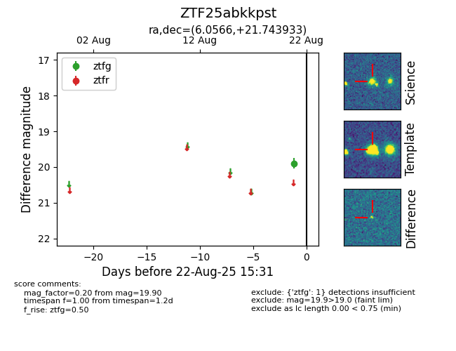

Target ZTF25abkkpst at 2025-08-22 16:16, see:
FINK: fink-portal.org/ZTF25abkkpst
Lasair: lasair-ztf.lsst.ac.uk/objects/ZTF25abkkpst
ALeRCE: alerce.online/object/ZTF25abkkpst
alt names
ZTF25abkkpst (ztf,alerce)
coordinates:
equatorial (ra, dec) = (6.0566,+21.74393)
galactic (l, b) = (114.5890,-40.68658)
photometry
last atlaso=19.50, ztfg=19.90
2 atlaso, 1 ztfg detections
